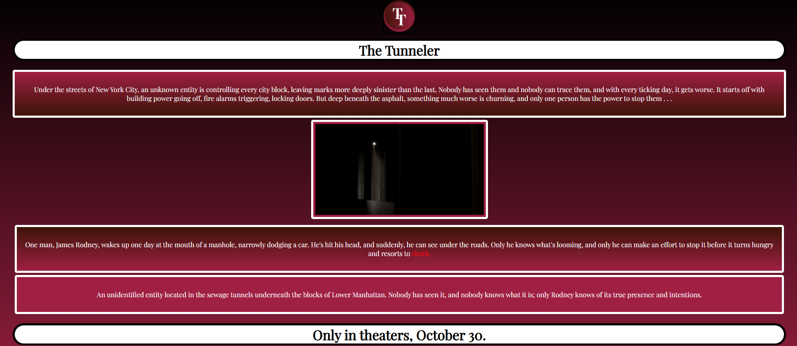

We were assigned a project where I would work with a partner to create a simple webpage themed for the release of a fictional movie of our choice. This project was intended as practice for our HTML and CSS skill, which we took to our advantage to combine with a looming, "soft" terror theme. The title of our movie was "The Tunneler", based in our very own New York City.
We were first required to devise a planning sheet of responsibilities for each other to make the project. We each delegated the other to specific roles in creating the project webpage, dividing the work evenly. While we couldn't figure out a great idea at first, we brainstormed, looked around, and decided to place the plot of our movie in Lower Manhattan, in the underground tunnel system of the city. The general idea would be an unknown, unseen monster lurking beneath the pavement, tampering with building controls before gradually moving forward to a more sinister, implied murderous theme. One main protagonist, James Rodney, hits his head on the ground, and he gains the ability to see underneath, now being the only person to bear knowledge of what runs under the street. This story was meant to hit close to home, while being an interesting hook for most audiences alike.
While working on this challenge, my partner and I ran into some challenges that held the project for a period of time. For instance, we had trouble trying to apply a gradient to select elements, including the background. In addition, we had trouble attempting to color the text in the email form input box. By reviewing our notes and doing research on past FreeCodeCamp lessons & W3Schools, we were able to determine the primary issues being a CSS element missing the linear-gradient option, as well as the form element missing the style attribute with a proper text color. Through these lessons, I was able to take away that reviewing past lessons / notes and memorizing specific element attributes are quite significant in contributing to a page's appearance with organization.
For my next steps, I would have chosen to stylize the page much more had I had the time to do so. My primary priority was to complete the code and review the basic essentials to ensure the webpage functioned and was organized well.
Link to the project